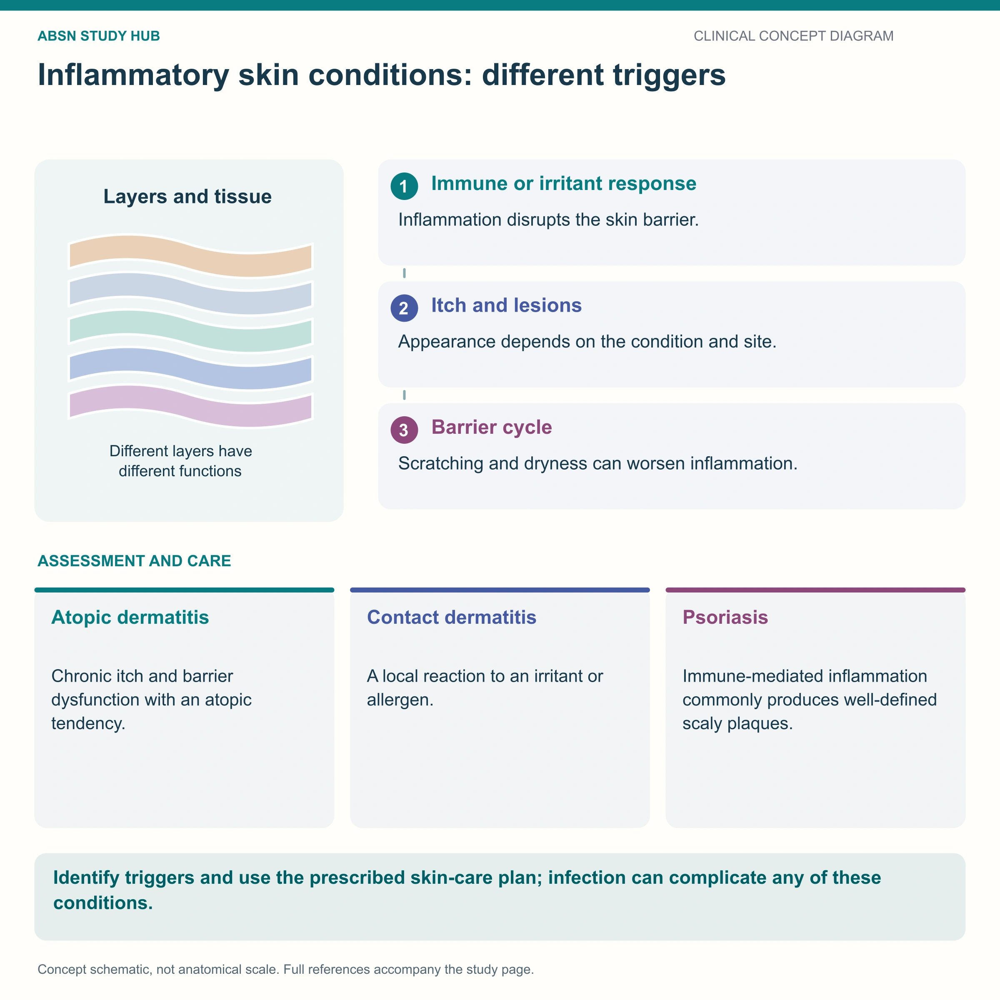

Autoimmune skin — silvery plaques, and the one word patients need to hear
Psoriasis is a chronic autoimmune disease in which the body attacks its own skin, pushing keratinocyte turnover from about 30 days down to 3–5 days. Immature cells pile up as well-demarcated red plaques topped with thick silvery scale on extensor surfaces — elbows, knees, scalp, sacrum and nails. There is no organism, so it is not contagious — that sentence is the single most important thing you will teach. Care is moisturize relentlessly, climb the treatment ladder only as far as needed, remember that sunlight helps, and always ask about the joints.
📄 Simple Nursing original — opens in Drive →
Same skin drawing as every page in this set — but look closely: there is no organism anywhere in it.
NO ORGANISM Cellulitis, impetigo, tinea and shingles all have something living in the picture. Psoriasis does not. The immune system is the pathogen — which is why it is treated by calming immunity down, and why it can never be caught from another person.

A plaque is a raised, flat-topped lesion larger than 1 cm. Add silvery scale and you have psoriasis.
An immune system that attacks its own skin, plus a trigger that sets it off.
Psoriasis is a chronic autoimmune inflammatory disease in which immune cells attack healthy skin, causing massively accelerated division of epidermal cells. The immature cells pile up on the surface as thick, silvery, scaly plaques.
It is lifelong, comes in flares and remissions, and is not curable — but it is very controllable.
Sharp-edged red plaques with silvery scale, on the outside of joints, in a patient who feels well.
Moisturize relentlessly, calm the immune system as far as you need to, and treat the person, not just the plaque.
1. Moisturize frequently. Apply a thick emollient immediately after bathing, onto damp skin, to trap water in. Use lukewarm (not hot) water, a mild non-soap cleanser, and pat dry — never rub.
2. Sunlight in moderation is GOOD. Controlled UV light slows the overactive skin cells. Do not tell a psoriasis patient to avoid the sun — but do teach them to avoid sunburn, which is trauma and can trigger Koebner.
Silvery scale on the outside of joints, in a well patient, with no organism.
| PSORIASIS | ECZEMA | TINEA | |
|---|---|---|---|
| Cause | Autoimmune | Barrier defect + allergy/atopy | Fungal infection |
| Where | Extensor: elbows, knees, scalp, sacrum | Flexural: inner elbows, behind knees | Warm, moist: trunk, groin, feet, scalp |
| Edge | Sharply demarcated | Ill-defined, blends out | Raised active ring with a clear center |
| Scale | Thick, SILVERY | Fine, dry, may weep or crust | Fine scale at the edge |
| Symptom | Itch, soreness, cracking | Intense itch | Itch |
| Contagious? | NO | NO | YES |
| Steroid response | Improves | Improves | Worsens (tinea incognito) |
Panel 4 is plaque psoriasis — on the same sheet as the eczema it gets mixed up with.
These newly drawn concept diagrams consolidate the retired illustration sets. The accompanying study notes and original handout links remain on this page.